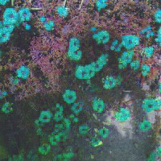
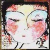

もーMike Ratledgeが、Robert Wyattが、Hugh Hopperが、Elton Deanが、格好良くて。止まらないです。
|
 |
#近所の畑の隅と、俺の影。 皆様最近調子はどーですか？ |
| 2002.3 / 2002.5 |

#2000.12.6と2002.9.16に2回来日したLars Hollmerがその時の共演者と作ったスタジオ録音盤。 #極めてお金無いのでCD買ってないしライヴも行ってません。
#極めてお金無いのでCD買ってないしライヴも行ってません。 |
#Soft Machine/Noisetteを買いました。 もーMike Ratledgeが、Robert Wyattが、Hugh Hopperが、Elton Deanが、格好良くて。止まらないです。 |
 そんなでもとりあえず、買うものは買います。WORLD STANDARD/Jump for Joyを。
そんなでもとりあえず、買うものは買います。WORLD STANDARD/Jump for Joyを。